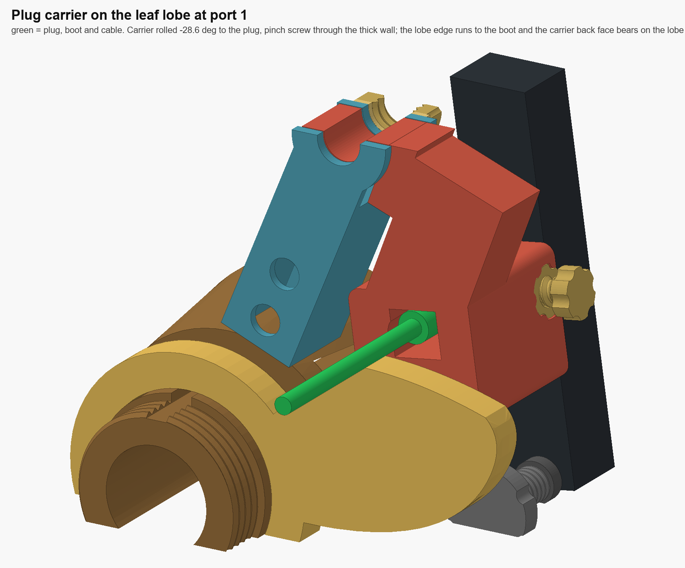
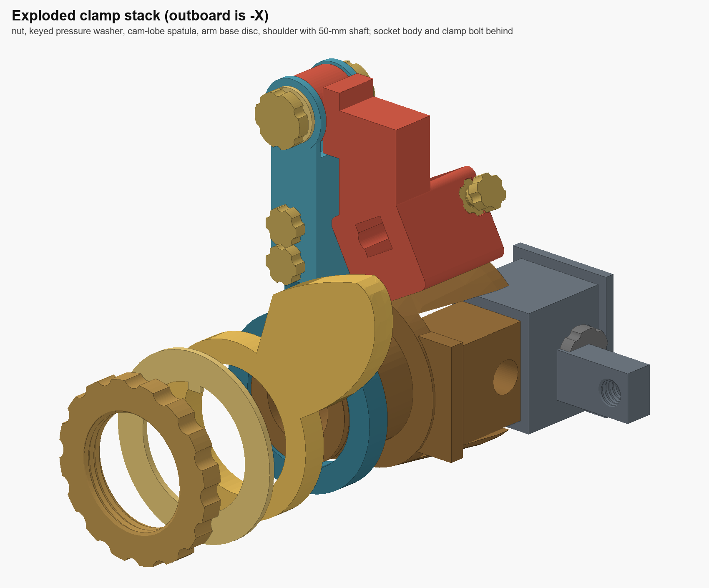
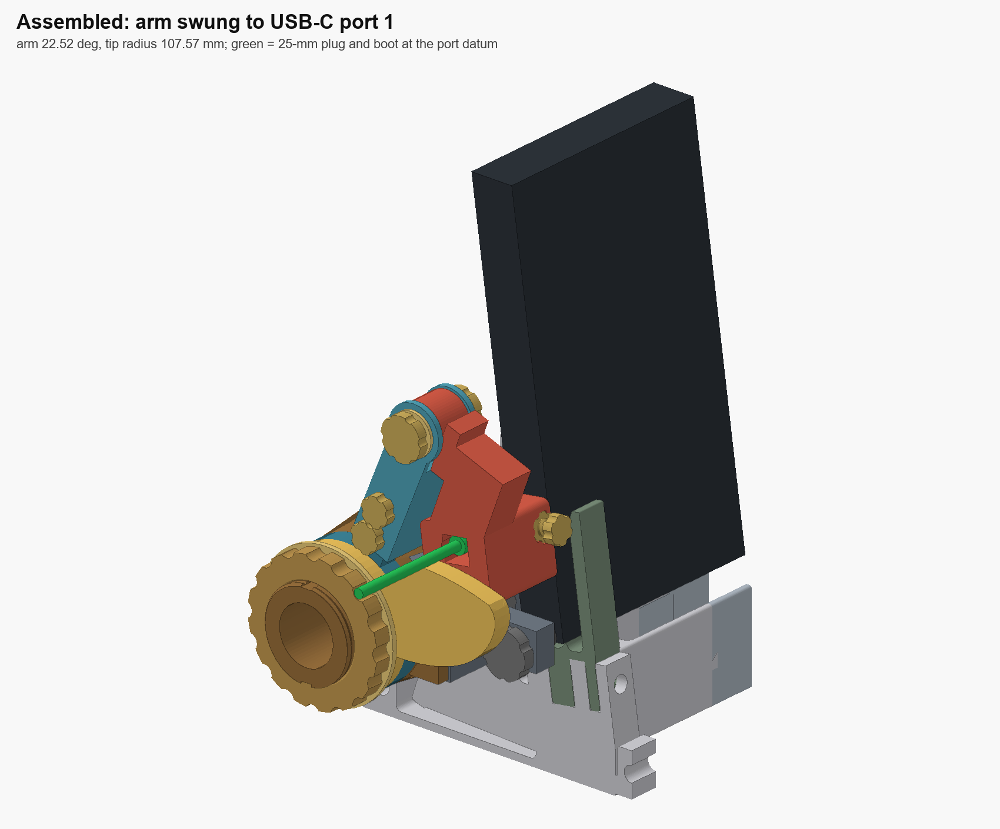
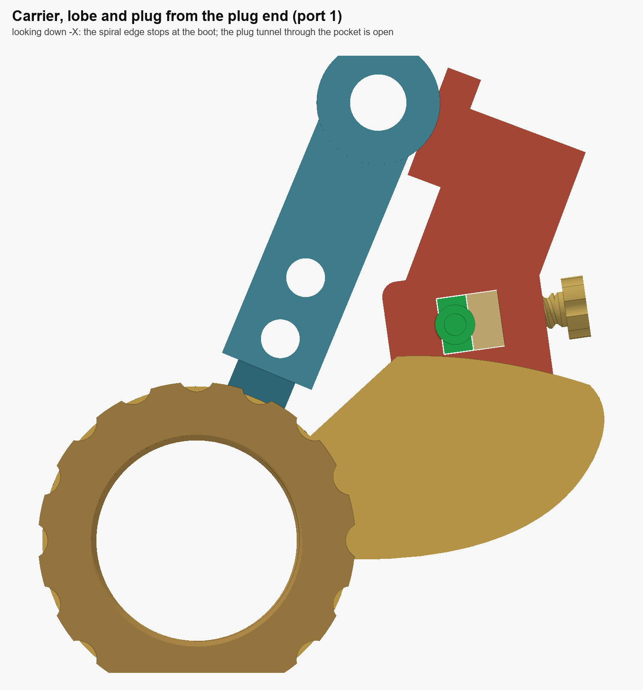

Bond the shell.
A continuous 20 mm scalloped shiplap replaces six internal bosses, pins and keys. A 0.20 mm bond gap accepts epoxy while a recessed air-side land keeps the finished chamber smooth.
Clean airflow, bonded plenum shells, serviceable fans and three one-piece laptop-contact cassettes.
Fifty installed printed parts. The plenums use bonded scalloped shiplaps, the fans use standard wire guards, each laptop contact is a removable H cassette, and the plug end carries a polar plug positioner on a Ø50 large-shaft face clamp with a leaf-lobe cam spatula and a flat-clamping plug carrier. The earlier polar arm could not reach the USB-C port; the builder now solves and checks that reach every build. CAD checks and Orca plate audits pass; physical qualification is still required.
Open the cleanup source and design record →Precision 5680 / D9 P5 cleanup
Keep the structure. Delete the plastic clutter.
The cleanup removes every internal plenum boss and fastener, both printed fan grilles and their hardware, and the pile of separate contact pieces. The current 50-part assembly adds a replaceable 30 × 40 mm plug-end socket and a polar linkage on a hollow Ø50 shaft, offset 25 mm from the socket so its carrier reaches both USB-C ports, without putting anything back into the air chambers. Loosen the knurled nut, paired reach clamps and tip pivot; plug in; turn the leaf spatula up under the carrier; tighten. The carrier clamps the plug on its overmold flats and the spatula takes the docking push.
A continuous 20 mm scalloped shiplap replaces six internal bosses, pins and keys. A 0.20 mm bond gap accepts epoxy while a recessed air-side land keeps the finished chamber smooth.
Standard 120 mm steel wire guards replace two giant printed grilles and sixteen printed retainers. Four M4 screws per fan land in blind pilots outside the air wall.
Seat and fence become one H cassette at each end and at the centre. The centre support foot and fork remain part of the two-piece splice ring; its short cassette stays removable.
D9 P5 / PLUG POSITIONER
The earlier polar arm could not reach either USB-C port. The rebuilt positioner turns on a Ø50 face clamp offset 25 mm toward the lid, and the builder now solves both port poses every build and fails on any contact.

ONE NUT, THREE JOBS
The shoulder bonds to the socket receiver and carries a smooth Ø50 journal with a printed 47 × 3 mm trapezoidal thread outboard. The arm’s Ø70 disc, a leaf-lobe spatula and a keyed washer stack on the journal and one knurled Ø72 nut pinches all of them against the shoulder face. Loosen the nut, the two reach clamps and the tip pivot; plug in; let the laptop locate the linkage; turn the leaf up under the carrier; tighten.
The spatula is a cam. Its spiral edge runs 0.5 mm from the plug boot at any arm angle, so the carrier’s back face bears on the lobe when the laptop pushes the plug home, while the arm and its length clamps take the pull when the laptop lifts off. The carrier clamps the plug on its 6.5 mm overmold flats between a thin wall and a flat bearing shim driven by an M8 pinch screw, so the plug cannot roll off axis, and an 18 mm land under the window gives the lobe about 400 mm² of face to bear on.
Ø50 is the floor: face-friction holding torque, three engaged thread turns and finger room on the nut set it. Thread fit, clamp torque, backlash and the tilt at 20 N are physical tests that have not been run; print the two full-diameter fit coupons on plate 00 first.
Read the clamp pivot validation record


A Ø70 disc clamped by face friction holds about twice the moment the 20 N plug load can apply, on a shaft small enough to leave the nut 71.5 mm proud of the cradle. The shoulder plate is 10 mm thick because, over the 25 mm pivot offset, it turned out to be the biggest term in the tilt estimate.
Fifty degrees of log-spiral arc, r 58 to 96 mm, with a rounded tip. Turning it sets the edge against the boot at whatever radius the arm angle puts the plug, without covering the plug tunnel. It rides the same journal and is pinched by the same nut as the arm.
The carrier block is built in the plug’s own frame, so its 14 × 13 mm window and pinch screw are orthogonal to the plug. A 16 mm printed M8 × 3 screw drives a loose 7 mm bearing shim against the overmold’s flat, spreading the pinch along the plug; a relief behind clears boots to Ø9. Below the window an 18 mm land, not a 5 mm wall, is what sits on the leaf: 375–404 mm² of bearing face instead of a 46–75 mm² sliver. The block’s long edges are rounded and the tunnel mouth is flared so the plug tip finds it; the bearing face stays square.
D9 P5 / CLEANUP VERIFICATION
The parametric build regenerates every production mesh and checks the nominal air volumes, rigid-part intersections, laptop envelope, fan envelope and sampled insertion motion. Slicer verification and physical testing come next.
Including the face-clamp shoulder, nut, keyed washer, leaf spatula, carrier pinch screw and shim
Both nominal plenum chambers remain unchanged
Rigid parts, laptop, fans and sampled insertion paths
The wall itself registers the two shell halves. Three shallow scallops key each lap without becoming posts in the chamber, and the bond line is accessible for an epoxy wipe.
Back and front arcs form the laptop-side ring; fan and floor arcs form the opposite closure. Alternating flanges still capture both plenums, and two opposite half-lap junctions retain registration.
Each cassette joins its seat and fence with a 4 mm deck bridge and raises the laptop contact 2 mm. The narrow centre version uses the short exit-side fence profile in the existing foot and fork.
D9 P5 / DIGITAL CHECKS
Fifty valid single-solid parts export as watertight meshes. Both air-volume audits are unchanged, and the assembled model reports no rigid, laptop or fan interference. This is a CAD checkpoint—not a claim that the cleanup has already been printed.
CURRENT SOURCE / CODEX CLEANUP
The branch contains the parametric builder, design record and current verified geometry. The downloadable P5 Orca kit predates this cleanup and is intentionally not presented as current.
CAD checks passed · slicing and physical qualification remain
Rebuild and inspect the cleanup in OrcaSlicer before printing. Laptop fit, loaded stability, epoxy procedure, screw retention, cooling and acoustics remain physical qualification items.
CURRENT / CLEANUP 3D VIEW
This viewer is regenerated from the cleanup CAD: bonded split plenums, three H contact cassettes, two splice rings, retained frame ties and the polar plug positioner. Its Ø50 face-clamp pivot, telescoping arm and tip pivot self-jig to the installed plug; a leaf-lobe spatula braces the docking push, printable thrust washers isolate tightening torque, while an independent soft-tip stop carries laptop docking load. The laptop and fans are reference bodies; the standard wire guards and eight M4 screws are purchased hardware and are described rather than modeled.
Open the cleanup viewer full size